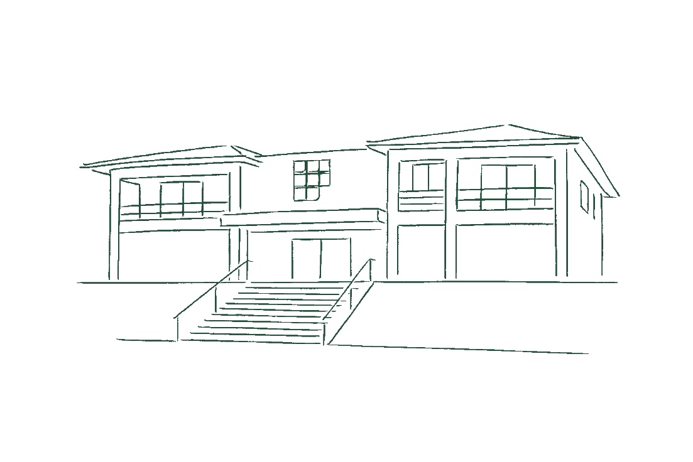

Ensino
Dois percursos, uma área de conhecimento.
Conheça a formação técnica concomitante e o curso superior de Tecnologia em Gastronomia.
Da formação técnica à pesquisa, a Gastronomia do IFF Campus Cabo Frio conecta pessoas, práticas, conhecimento e território.

Do conhecimento técnico à gestão e à pesquisa, a Gastronomia encontra no território parte fundamental de sua formação.
Conheça a formação técnica concomitante e o curso superior de Tecnologia em Gastronomia.
Normas, organização do trabalho e atividades pedagógicas nos ambientes de ensino.

Registros fotográficos publicados pelo Portal IFFluminense. A integração das imagens do Instagram @gastroiff depende de acesso autorizado ao perfil; estas imagens não foram extraídas do Instagram.
Eventos de Gastronomia e datas acadêmicas do IFF, em uma agenda com fontes identificadas.
O calendário oficial do campus reúne os prazos e os períodos letivos. A agenda acima destaca datas selecionadas, sem substituir esse documento.
Consultar calendário acadêmico do IFF ↗Documentos, projetos pedagógicos e registros institucionais ajudam a preservar a trajetória dos cursos e tornam a informação mais acessível a estudantes e à comunidade.
Explorar documentosReformulação aprovada pela Resolução CONSUP nº 119/2023.
Consultar PPC ↗Reformulação aprovada pela Resolução CONSUP nº 12/2022.
Consultar PPC ↗Normas e orientações para uso pedagógico dos espaços de formação.
Consultar orientações ↗O GASTROIFF reúne informações dos cursos de Gastronomia. Para conhecer os demais cursos, serviços, editais e notícias institucionais, visite o portal oficial do campus.